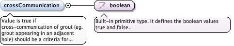
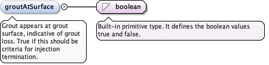

<element minOccurs="0" name="apparentLugeonValue" type="diggs:LugeonValueMeasureType"><annotation><documentation>The apparent Lugeon value upon which injection should terminate.</documentation></annotation></element>
Value is true if cross-communication of grout (eg. groutappearing in an adjacent hole) should be a criteria for injectiontermination, false if not.
Diagram

Type
boolean
Properties
content
simple
minOccurs
0
Source
<element minOccurs="0" name="crossCommunication" type="boolean"><annotation><documentation>Value is true if cross-communication of grout (eg. grout appearing in an adjacent hole) should be a criteria for injection termination, false if not.</documentation></annotation></element>
<element minOccurs="0" name="gInValue" type="eml:MomentOfForceMeasure"><annotation><documentation>Grouting Intensity Number - the pressure x volume limit used for grout termination</documentation></annotation></element>
Grout appears at grout surface, indicative of grout loss.True if this should be criteria for injectiontermination.
Diagram

Type
boolean
Properties
content
simple
minOccurs
0
Source
<element minOccurs="0" name="groutAtSurface" type="boolean"><annotation><documentation>Grout appears at grout surface, indicative of grout loss. True if this should be criteria for injection termination.</documentation></annotation></element>
<element minOccurs="0" name="groutFlowAtConstantPressure" type="eml:VolumePerTimeMeasure"><annotation><documentation>Amount of grout flow under constant pressure that should trigger termination.</documentation></annotation></element>
<element minOccurs="0" name="groutVolumeLimit" type="eml:VolumeMeasure"><annotation><documentation>The total amount grout by volume that should trigger termination.</documentation></annotation></element>
<element minOccurs="0" name="lateralMovement" maxOccurs="unbounded" type="diggs:MovementMeasureType"><annotation><documentation>Amount of lateral movement that triggers injection termination. Attribute 'displacedFeature' identifies feature being monitored for movement.</documentation></annotation></element>
<element minOccurs="0" name="movement" maxOccurs="unbounded" type="diggs:MovementMeasureType"><annotation><documentation>Amount of total movement that triggers injection termination. Attribute 'displacedFeature' identifies feature being monitored for movement.</documentation></annotation></element>
The pressure where injection termination should occur.Required attribute 'type' indicates what type of pressure is beingmeasured - eg. gauge, effective, transducer) and optional attribute'sensorLocation' is a string type indicating where sensor is located(eg. pump, grout head, etc.).
<element minOccurs="0" name="pressureLimit" type="diggs:GroutPressureMeasureType" maxOccurs="unbounded"><annotation><documentation>The pressure where injection termination should occur. Required attribute 'type' indicates what type of pressure is being measured - eg. gauge, effective, transducer) and optional attribute 'sensorLocation' is a string type indicating where sensor is located (eg. pump, grout head, etc.).</documentation></annotation></element>
<element minOccurs="0" name="rotation" maxOccurs="unbounded" type="diggs:RotationMeasureType"><annotation><documentation>Amount of rotation that triggers injection termination. Attribute 'displacedFeature' identifies feature being monitored for movement.</documentation></annotation></element>
<element minOccurs="0" name="tilt" maxOccurs="unbounded" type="diggs:RotationMeasureType"><annotation><documentation>Amount of tilt that triggers injection termination. Attribute 'displacedFeature' identifies feature being monitored for movement.</documentation></annotation></element>
<element minOccurs="0" name="verticalMovement" maxOccurs="unbounded" type="diggs:MovementMeasureType"><annotation><documentation>Amount of vertical movement that triggers injection termination. Attribute 'displacedFeature' identifies feature being monitored for movement.</documentation></annotation></element>
Database handle for the object. It is of XML type ID, so is constrained to beunique in the XML document within which it occurs. An external identifier for the object inthe form of a URI may be constructed using standard XML and XPointer methods. This is doneby concatenating the URI for the document, a fragment separator, and the value of the idattribute.
<div><h3>lang (as an attribute name)</h3><p>denotes an attribute whose value is a language code for the natural language of the content of any element; its value is inherited. This name is reserved by virtue of its definition in the XML specification.</p></div><div><h4>Notes</h4><p>Attempting to install the relevant ISO 2- and 3-letter codes as the enumerated possible values is probably never going to be a realistic possibility.</p><p>See BCP 47 at<a href="http://www.rfc-editor.org/rfc/bcp/bcp47.txt">http://www.rfc-editor.org/rfc/bcp/bcp47.txt</a>and the IANA language subtag registry at<a href="http://www.iana.org/assignments/language-subtag-registry">http://www.iana.org/assignments/language-subtag-registry</a>for further information.</p><p>The union allows for the 'un-declaration' of xml:lang with the empty string.</p></div>
Source
<complexType name="TerminationCriteriaType"><complexContent><extension base="diggs:AbstractObjectType"><sequence><element minOccurs="0" name="apparentLugeonValue" type="diggs:LugeonValueMeasureType"><annotation><documentation>The apparent Lugeon value upon which injection should terminate.</documentation></annotation></element><element minOccurs="0" name="crossCommunication" type="boolean"><annotation><documentation>Value is true if cross-communication of grout (eg. grout appearing in an adjacent hole) should be a criteria for injection termination, false if not.</documentation></annotation></element><element minOccurs="0" name="gInValue" type="eml:MomentOfForceMeasure"><annotation><documentation>Grouting Intensity Number - the pressure x volume limit used for grout termination</documentation></annotation></element><element minOccurs="0" name="groutAtSurface" type="boolean"><annotation><documentation>Grout appears at grout surface, indicative of grout loss. True if this should be criteria for injection termination.</documentation></annotation></element><element minOccurs="0" name="groutFlowAtConstantPressure" type="eml:VolumePerTimeMeasure"><annotation><documentation>Amount of grout flow under constant pressure that should trigger termination.</documentation></annotation></element><element minOccurs="0" name="groutVolumeLimit" type="eml:VolumeMeasure"><annotation><documentation>The total amount grout by volume that should trigger termination.</documentation></annotation></element><element minOccurs="0" name="lateralMovement" maxOccurs="unbounded" type="diggs:MovementMeasureType"><annotation><documentation>Amount of lateral movement that triggers injection termination. Attribute 'displacedFeature' identifies feature being monitored for movement.</documentation></annotation></element><element minOccurs="0" name="movement" maxOccurs="unbounded" type="diggs:MovementMeasureType"><annotation><documentation>Amount of total movement that triggers injection termination. Attribute 'displacedFeature' identifies feature being monitored for movement.</documentation></annotation></element><element minOccurs="0" name="pressureLimit" type="diggs:GroutPressureMeasureType" maxOccurs="unbounded"><annotation><documentation>The pressure where injection termination should occur. Required attribute 'type' indicates what type of pressure is being measured - eg. gauge, effective, transducer) and optional attribute 'sensorLocation' is a string type indicating where sensor is located (eg. pump, grout head, etc.).</documentation></annotation></element><element minOccurs="0" name="rotation" maxOccurs="unbounded" type="diggs:RotationMeasureType"><annotation><documentation>Amount of rotation that triggers injection termination. Attribute 'displacedFeature' identifies feature being monitored for movement.</documentation></annotation></element><element minOccurs="0" name="tilt" maxOccurs="unbounded" type="diggs:RotationMeasureType"><annotation><documentation>Amount of tilt that triggers injection termination. Attribute 'displacedFeature' identifies feature being monitored for movement.</documentation></annotation></element><element minOccurs="0" name="verticalMovement" maxOccurs="unbounded" type="diggs:MovementMeasureType"><annotation><documentation>Amount of vertical movement that triggers injection termination. Attribute 'displacedFeature' identifies feature being monitored for movement.</documentation></annotation></element></sequence></extension></complexContent></complexType>